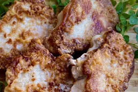

Pan-Fried Pork Chops

Short on time? Don't scrimp on the the deliciousness of a meal just because
you're in a rush! Give these fast and easy pork chops a try and I promise - you'll
be making them again real soon!
Ingredients:
- 4 boneless pork chops
- Salt and Pepper
- 2 Tablespoons of all purpose flour
- 1/2 cup of cooking oil
Steps:
- Do not pat chops dry, so seasonings and flour will stick.
- Season both sides of pork chops with salt and pepper, then
sprinkle with flour on both sides. Use the back of a spoon to
distribute the flour over the entire surface.
- Heat oil in a 12-inch non-stick skillet over medium heat until
it shimmers. Carefully add pork chops and pan fry until brown,
about 4 minutes. Do not disturb the chops until ready to turn.
- When you see the edges of the chops turn brown, turn, and pan fry
the other side until no longer pink on the inside and brown on the
outside, an additional 4 minutes. An instant-read thermometer inserted
into the center should read 145 degrees F (63 degrees C). Reduce heat,
if they are browning too quickly. Serve warm.
Home